NFC Album Player
User manual. Each album is a card: put a card in the slot and its album plays, take it out and it pauses. This page shows what you will see on the player and what each control does.
About the pictures. Every screen below was taken from the player's browser simulator, which draws exactly what the real display shows. The music is the demo library of generated tones, so track names are numbers like 0300. If you are building the player, the build guide covers the wiring and installation.
The controls
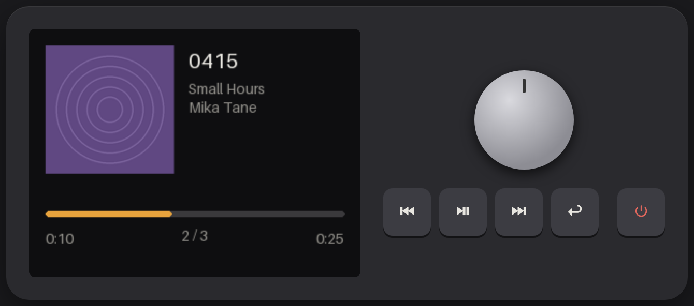
| Control | What it is for |
|---|---|
| Card slot | Put a card in to play it. Take it out to pause. |
| Knob | Turn for volume, or to move through a list. Push to pause and resume, or to choose. Hold for 1 second for the card menu, or for settings when there is no card in the slot. |
| ⏮ Previous | Back a track. Hold to rewind. |
| ⏯ Play / pause | Pause and resume. |
| ⏭ Next | Forward a track. Hold to fast-forward. |
| ↩ Back | Show the track list, or leave a list or menu. Hold for 2 seconds to start from the first track. |
| ⏻ Power | Turn the player off safely, and on again. |
Turning it on and off
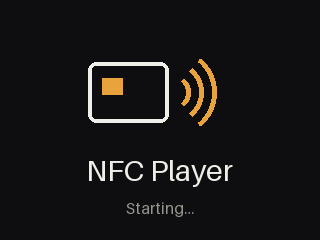
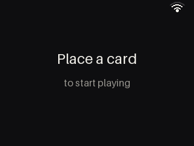
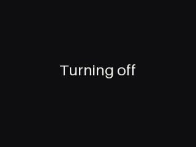
- To turn it on, press power. If it is plugged in for the first time, it starts on its own.
- To turn it off, press power. The player remembers where the card stopped, stops playing and shuts down. Wait for the screen to go dark before unplugging.
- If the music drive is connected to a computer, or the web page is uploading music, the player says so and stays on. Eject the drive or wait for the upload, then press power again.
Link a new card
A blank card does not play anything until you tell it what to play. You can link it to one of three things:
- Album: one album.
- Artist: every album by that artist, oldest first.
- List: a list you made on the web remote, or a folder of songs from more than one album, played in file name order. This choice appears only when there is at least one list.
- Put the blank card in the slot. The player asks what to link it to.
- Turn the knob to Album, Artist or List and push it.
- Turn the knob to choose (albums are in A to Z order) and push it. The card is linked and starts playing straight away.
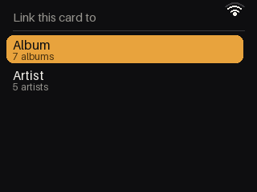
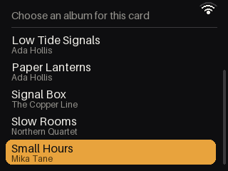
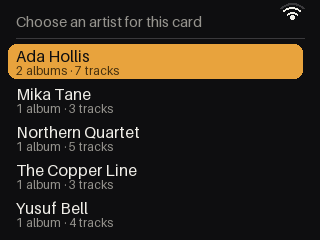
Press back at any step to go back one screen. Cards can also be linked from the web remote.
Playing
Put a linked card in the slot and it plays from where that card last stopped. Each card remembers its own place, so you can swap between albums and pick each one up again.
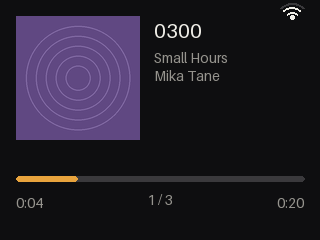
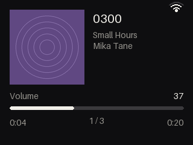
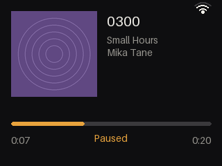
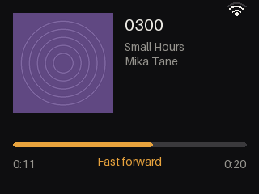
| To | Do this |
|---|---|
| Change the volume | Turn the knob. |
| Pause or resume | Push the knob or press play/pause. Taking the card out also pauses. |
| Next track | Press next. |
| Previous track | Press previous. More than 3 seconds into a track, this goes to the start of the track instead; press again for the one before. |
| Rewind or fast-forward | Hold previous or next. It speeds up after 3 seconds. Fast-forward runs on into the next track; rewind stops at the start of the track. |
| Start from the beginning | Hold back for 2 seconds. The album, artist or list plays from its first track. |
| Play it again after it ends | Push the knob or press play/pause. |
Choose a track
While something is playing, press back to see its tracks. The one playing is marked Playing now.
- Turn the knob to a track and push it to play it.
- Press back again to close the list.
Music keeps playing while you look.
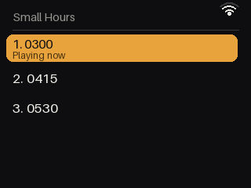
Change or unlink a card
With the card in the slot, hold the knob for the card menu:
- Link to something else takes you through the same steps as a new card.
- Unlink this card makes it blank again.
- Close, or press back, leaves the menu.
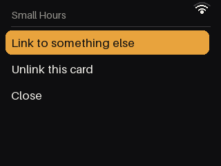
Wi-Fi and settings
The Wi-Fi icon
The icon in the top right corner of the screen shows how well the player hears your Wi-Fi: the more lit curves, the stronger the signal. One lit dot is a weak signal.
When it is struck through, the player is not on a network. Cards, the knob and the keys still work as normal; only the web remote needs Wi-Fi.
On the small OLED screen the icon is left out of lists, where there is no room for it.
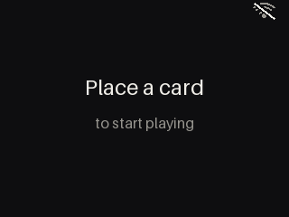
Settings
With no card in the slot, hold the knob for 1 second. Turn to choose, push to open, and press back to go back.
- Wi-Fi shows the network the player is on and lets you connect it to a new one.
- Volume limit sets the loudest the player can go, from the knob or the web remote.
- About this player shows the web remote's address, the amount of music and the free space.
- Restart the player starts the player program again. Cards remember their places.
Putting a card in leaves the settings and plays it.
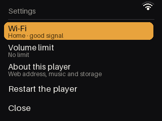
Connect to a new Wi-Fi network
Use this when you move the player to another house, change your router, or change your Wi-Fi password. You need a phone (or a laptop).
- Take out any card, hold the knob for 1 second, and choose Wi-Fi, then Connect to a new network.
- The player leaves its current network and starts its own, called NFC Player Setup. The screen shows its password, made up fresh each time.
- On the phone, join NFC Player Setup. The quickest way is to point the phone's camera at the code on the screen; or choose it in the phone's Wi-Fi settings and type the password.
- Most phones then open the player's Wi-Fi page by themselves. If yours does not, open a browser and go to
http://10.42.0.1. The phone may warn that this network has no internet: that is expected, stay connected. - Choose your network from the list (or type its name), type its password and press Connect.
- The phone drops off the setup network and the player joins yours. Its screen says Connected to and the network's name. Push the knob to finish.
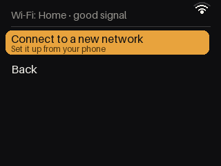
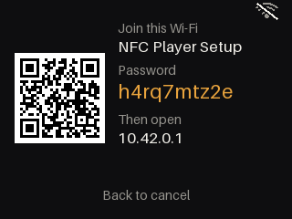
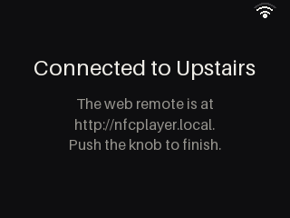
- Wrong password, or the network was not found? The player says so at the bottom of the screen and starts its setup network again with the same password. Join it again on the phone and try once more.
- Changed your mind? Press back. The player closes its setup network and goes back to the network it was on.
- The setup network closes by itself after 10 minutes if nobody uses it.
- The player's Wi-Fi works with 2.4 GHz networks only. The new network is remembered, as well as the old ones; the player joins whichever is in range.
Is it safe? The setup network is protected by a password that is made up fresh each time and shown only on the player's screen, so only someone standing at the player can join it. The page that takes your Wi-Fi password only works for phones on that network, and only while it is open. The password travels over that protected link and is saved by the Pi's network manager in a file only the system can read; the player program does not keep a copy.
Volume limit and About
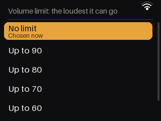
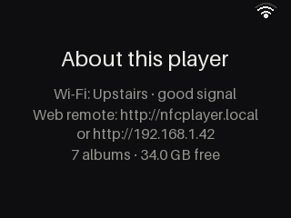
.local one.Add music over USB
The quickest way to add a lot of music is to plug the player into a computer with a USB cable.
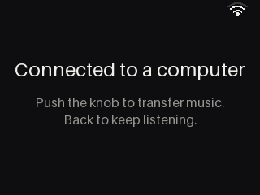
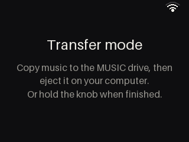
MUSIC drive is on your computer.- Plug the player into the computer. The screen says Connected to a computer. Push the knob. (Press back instead to keep listening.)
- A drive called
MUSICappears on the computer. Copy albums onto it asArtist/Album/tracks, for exampleNina Simone/Pastel Blues/01 Be My Husband.flac. - For a cover, put a
cover.jpgin the album's folder. Without one, the cover stored inside the tracks is used. - Eject
MUSICon the computer. The player checks the drive and finds the new music. If the screen stays on Transfer mode after ejecting, hold the knob for a second.
FLAC, MP3, AAC/M4A, Ogg, Opus, WAV and AIFF all play. The player cannot play music while the computer has the drive.
Always eject before unplugging. If the cable comes out in the middle of a copy, the drive is repaired the next time the player starts, but the file that was being copied is lost.
Albums come from the tags inside the files, so a folder of mixed songs still sorts into its real albums. Files without tags use their folders: the folder is the album and the folder above it is the artist.
Web remote
On any phone or computer on the same Wi-Fi, open http://nfcplayer.local. Nothing needs installing. The page is the easiest way to look through your music, make lists and look after the drive; the knob and keys are for listening.

Find and play
- The sidebar has Albums, Artists and Songs, then your lists. On a phone it opens from the ☰ button.
- Type in Search to narrow down albums, artists or songs.
- Click a cover to open the album or artist. Click a song to play from it, with or without a card in the slot. On a computer, the round button that appears over a cover plays it straight away.
- The bar along the bottom shows what is playing, with previous, play/pause, next, volume and a position bar you can click or drag to jump within the song. It follows the knob and keys, and they follow it. Click the cover in the bar for Now playing.
- The card still decides: putting a linked card in plays that card, and taking it out pauses whatever is playing. Playing something from the page does not move the place a card remembers.
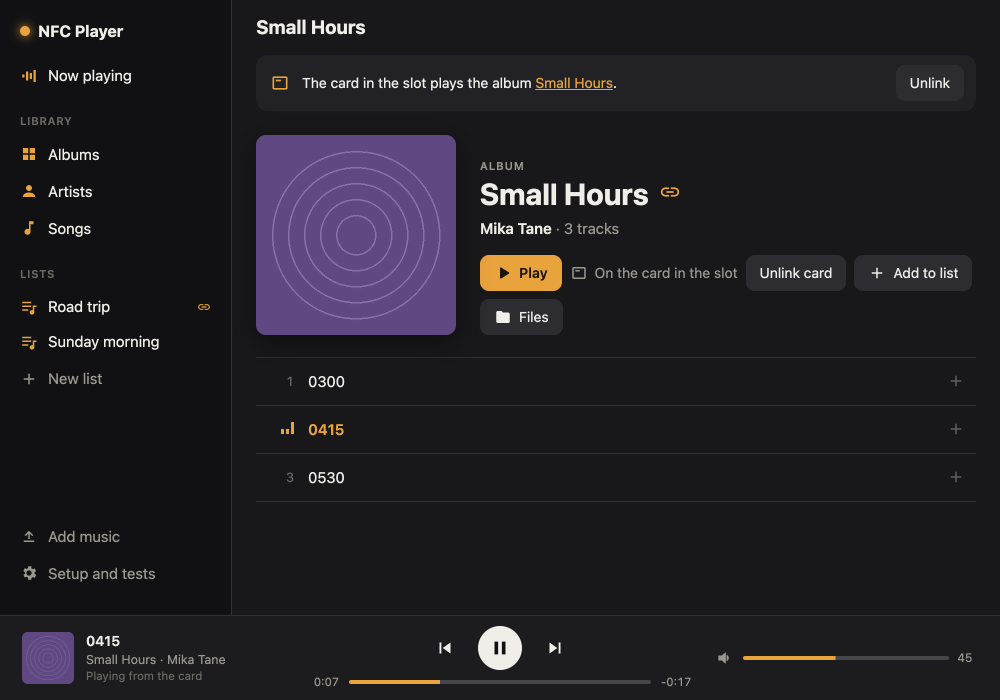
Make lists
A list is any songs you like, from any albums, in the order you choose. A card can play a list just like an album. Making a list never copies or moves music, so it takes no space on the drive.
- Press + New list in the sidebar, type a name and press Enter. Or start from the songs: see the next step.
- Press + next to any song, or Add to list on an album, artist or list, then choose a list. To start a new one from those songs, type a name under the lists and press Create.
- Open the list from the sidebar to play it, link it to a card, or put it in order.
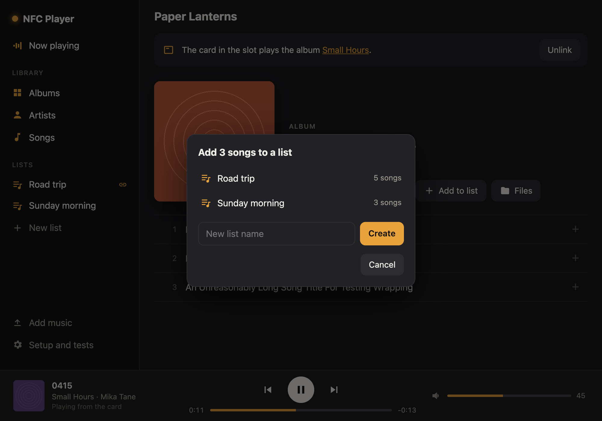
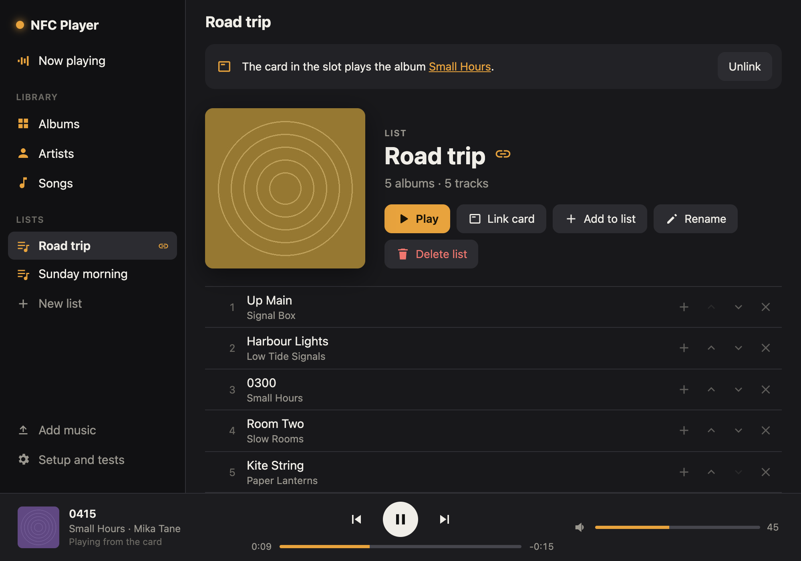
- Reorder: on a computer, drag a song up or down. On a phone, use the ⌃ and ⌄ arrows.
- Remove a song from the list with ✕. The song stays in your library.
- Rename or Delete list from the buttons at the top. A card linked to a list keeps working after a rename; after a delete it needs linking again.
- If you delete a song's file, lists skip it.
Lists live on the player itself, not on the MUSIC drive, so they do not show up when the drive is connected to a computer. A folder that holds songs from several albums also shows in the sidebar as a list, with a folder icon; it plays in file name order and is changed by changing the folder.
Link cards
- With a card in the slot, a line at the top of the page says what it plays, with an Unlink button.
- Open any album, artist or list and press Link card. It starts playing, just as if you had used the knob. The button works only with a card in the slot.
- A chain next to an album, artist or list means a card is linked to it. Hover over it to see Linked to card. It is only a reminder: you can still link the same music to other cards.
On a phone
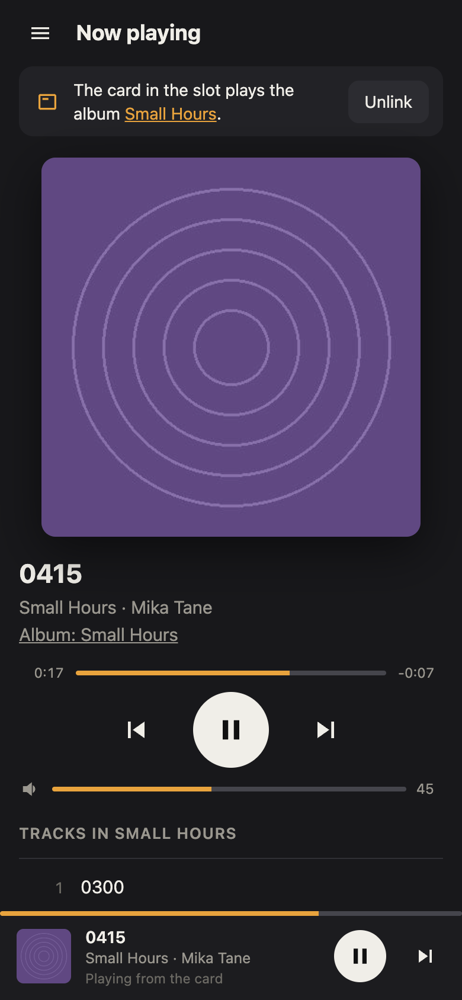
The same page fits a phone. The sidebar opens from ☰, and the bar at the bottom keeps play/pause and next in reach.
Tap the bar for Now playing: big controls, volume, and the songs in what is playing. Tap a song to jump to it.
On an iPhone, Share → Add to Home Screen gives the remote its own icon.
Add music from the page
Press Add music at the bottom of the sidebar.
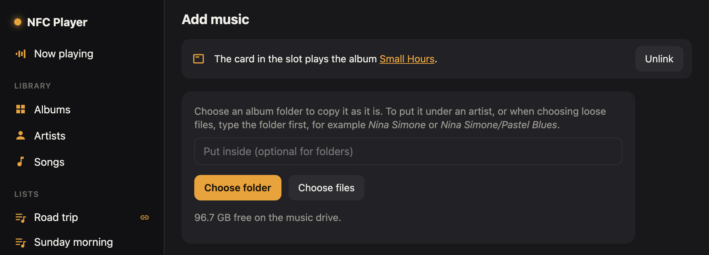
- Press Choose folder and pick an album folder. It is copied with its name.
- To file it under an artist, first type the artist in Put inside, for example
Nina Simone. Picking a whole artist folder also works. - On an iPhone, which cannot pick folders, use Choose files and type the full folder in Put inside, for example
Nina Simone/Pastel Blues. - Keep the page open until every file says done. The album appears under Albums a few seconds later.
Music keeps playing during an upload. Only music and cover pictures are accepted. For a large collection, USB is much faster.
Delete music
- Open the album and press Files to see its files and their sizes.
- Press Delete next to a file, or Delete whole album, and confirm.
- A card linked to a deleted album stays linked to nothing; link it to something else. Deleted songs drop out of any list they were in.
Deleting cannot be undone. There is no bin.
The page has no password. Anyone on your Wi-Fi can open it, change what is playing, relink the card in the slot, and add or delete music. Use it on a home network you trust.
Setup page
Setup and tests, at the bottom of the web remote's sidebar, opens http://nfcplayer.local/setup. You normally need it only once, after building the player, or when something seems wrong.
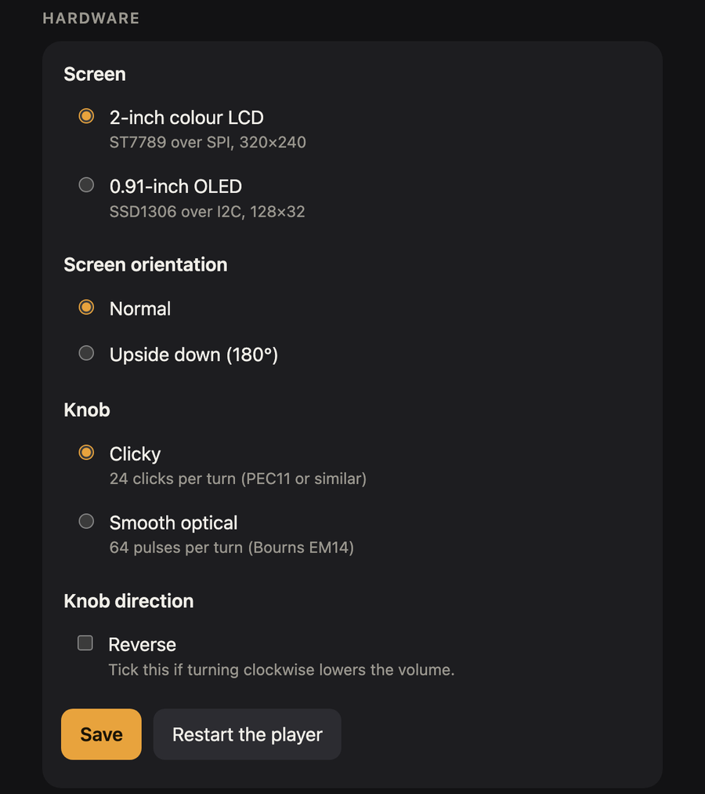
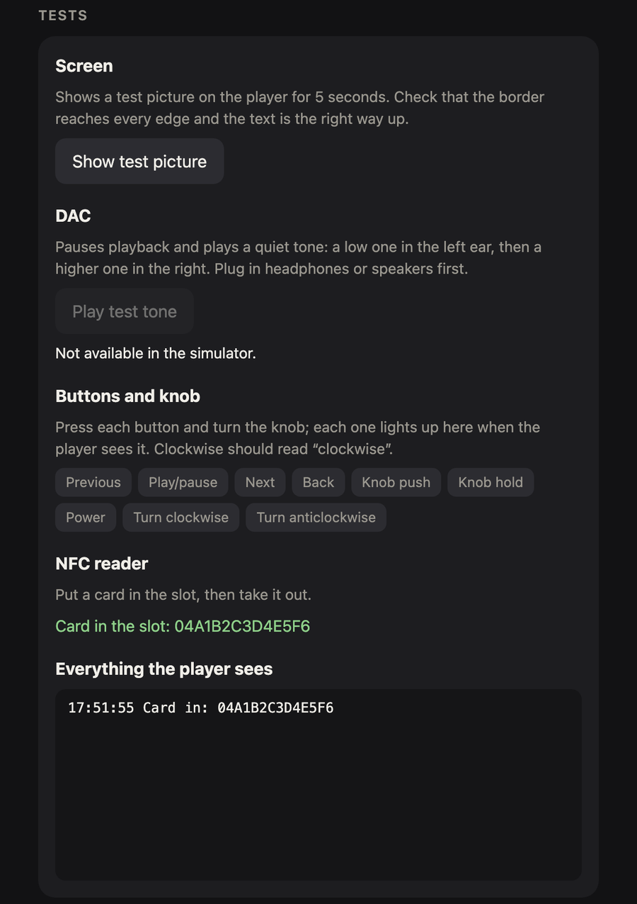
- Knob direction: tick Reverse if turning clockwise lowers the volume.
- Screen orientation: choose Upside down if the picture is the wrong way up.
- Screen test shows a test picture for 5 seconds. Check that the border reaches every edge.
- DAC test plays a quiet low tone in the left ear, then a higher one in the right. Plug in headphones or speakers first.
- NFC reader: put a card in and the page shows its number.
Small OLED screen
A player built with the 0.91-inch OLED instead of the 2-inch colour screen works the same way, with a compact layout and no covers.
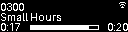
Messages
| The screen says | What to do |
|---|---|
| Card not linked | Push the knob to choose what the card plays. If it adds The music linked to this card is missing, the album was deleted or moved; link the card again. |
| Card not linked: No music yet | Add music over USB or from the web remote. |
| The music drive is connected to a computer | Eject MUSIC on the computer, then try again. |
| An upload from the web page is still running | Wait for the upload to finish. |
| Wi-Fi setup did not work | The player could not start its setup network. Push the knob, wait a few seconds and try again. If it keeps happening, restart the player from the settings. |
| Something went wrong | Read the message under it. It clears after a few seconds. If it keeps coming back, see troubleshooting in the build guide. |
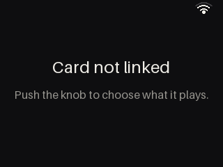
Quick reference
| You do | It does |
|---|---|
| Insert a new card | Asks what to link it to, then plays it. |
| Insert a linked card | Plays from where that card stopped. |
| Remove the card | Pauses and remembers the place. |
| Turn the knob | Volume, or moves through a list. |
| Push the knob | Pause / resume, or choose. |
| Hold the knob (1 second) | Card menu. With no card: settings. In transfer mode: finish transferring. |
| Previous / next | Skip a track. |
| Hold previous / next | Rewind / fast-forward. |
| Back | Track list while playing; otherwise leaves a list or menu. |
| Hold back 2 seconds | Start from the first track. |
| Power | Turns off safely; press again to turn on. |
In the simulator
Run the simulator (see Try it) and open http://localhost:8137. The keyboard stands in for the controls:
| Key | Control |
|---|---|
| ← → | Turn the knob (Shift for small steps). You can also scroll or drag on the knob. |
| Enter / M | Push / hold the knob |
| Z X C | Previous, play/pause, next (hold Z or C to scan) |
| Esc | Back (hold 2 seconds to start from the first track) |
| 1–4 / 0 | Insert card 1–4 / remove the card |
| Wi-Fi signal buttons | Set the simulated signal, or switch Wi-Fi off. Connecting to a new network works too: open http://localhost:8080 while the join screen is up. Any password works except wrongpassword. |